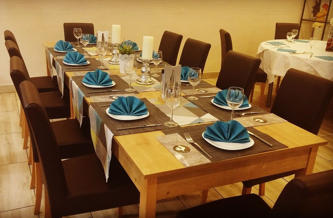
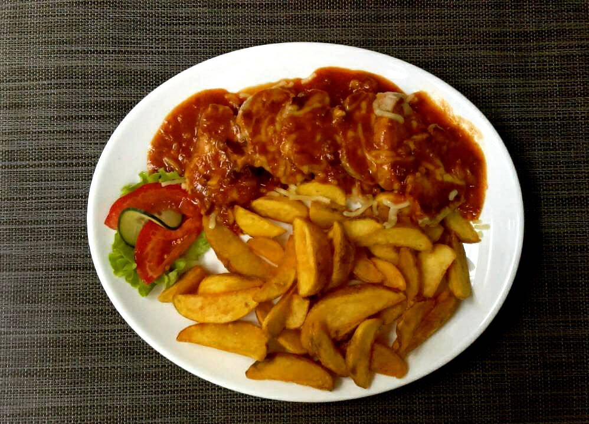
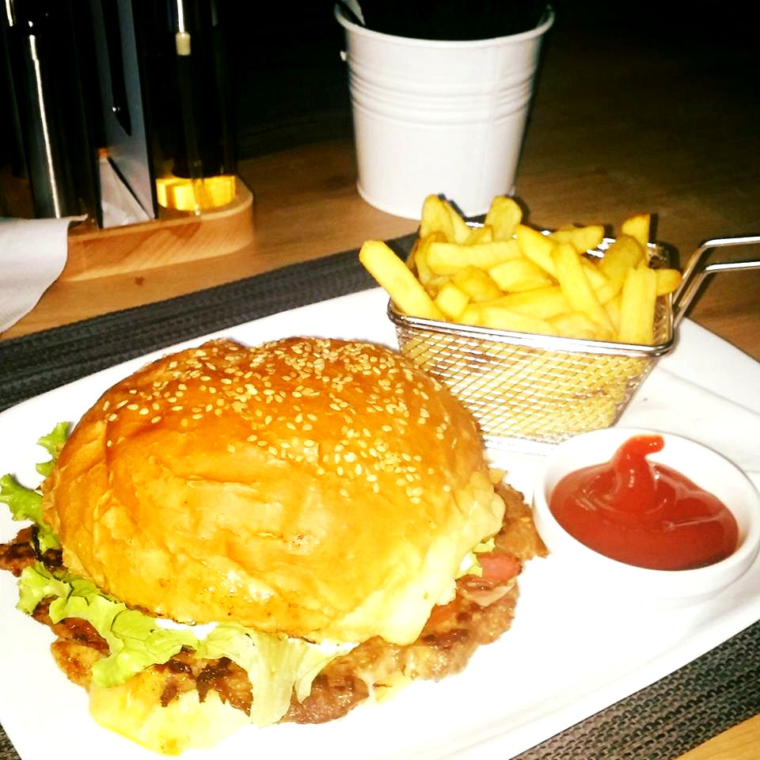
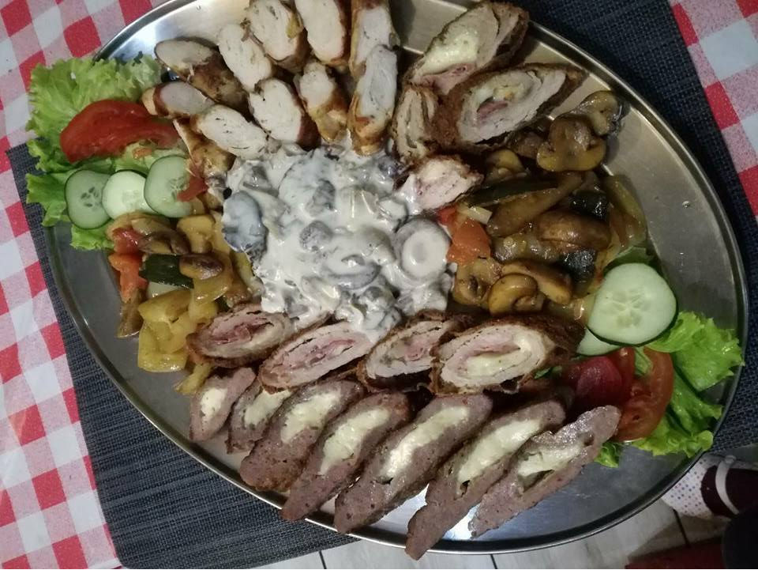
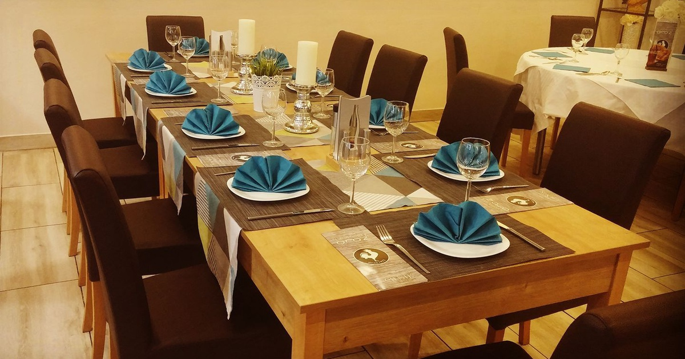

Matije Gupca 33 · Slavonski Brod
Restoran Oroz
Prvi restoran u gradu s dugom tradicijom rada u novom sjaju. Oroz spaja tradiciju i novitete treće generacije obitelji Oroz te nudi gablece, roštilj, pizze i bogat meni za svaku prigodu.
Dobro došli u Oroz
Mjesto za ručak, večeru, proslave, catering i dostavu hrane.

O nama
Obiteljski restoran za ručak, večeru i posebne prigode
Oroz je poznat obiteljski restoran u Slavonskom Brodu koji spaja tradiciju, domaću kuhinju i moderniji izgled prostora. U ponudi su gotova jela, pizze, roštilj, jela po narudžbi i plate za više osoba.
Restoran nudi dostavu unutar grada, catering za razne događaje te organizaciju godišnjica, matura, rođendana, pričesti, krizmi, poslovnih ručkova i drugih proslava.
Što Oroz nudi
Ponuda prilagođena svakodnevnim obrocima i posebnim događajima
Dnevna jela i gableci
Čobanac, gulaš, fiš, grah i druga gotova jela iz svakodnevne ponude.
Pizze i roštilj
Uz pizze, u ponudi su i ćevapi, odresci, burgeri, plate i druga jela s roštilja.
Proslave i domjenci
Organizacija rođendana, godišnjica, pričesti, krizmi, maturalnih večeri i poslovnih ručkova.
Catering i dostava
Besplatna dostava hrane unutar Slavonskog Broda i catering za vaše događaje.
Jelovnik
Odabrana jela iz ponude restorana Oroz
Galerija jela je vizualno prilagođena školskom projektu i koristi različite fotografije jela bez ponavljanja.








Galerija
Interijer i jela restorana Oroz
Uređen prostor za goste, proslave i svakodnevne obroke uz odabrane fotografije jela.


Za svaku prigodu
Rezervacije, proslave i catering na jednom mjestu
Kod nas možete organizirati godišnjice, rođendane, pričesti, krizme, mature, poslovne ručkove i druge domjenke. Uz hranu iz restorana, dostupni su i catering te dostava za različite događaje.
Kontakt
Posjeti Restoran & Bar Oroz
Adresa
Matije Gupca 33
35000 Slavonski Brod
Telefon
035 / 441-666
hrvoje.oroz2@gmail.com
Radno vrijeme
Pon - Čet: 07:00 - 23:00
Pet: 07:00 - 24:00
Sub: 08:00 - 24:00
Nedjelja i blagdani: 10:00 - 22:00
Dostava
Pon - Čet: 08:30 - 22:30
Pet - Sub: 09:00 - 23:00
Nedjelja i blagdani: 10:30 - 21:30
Dodatne usluge
Besplatna dostava, catering, organizacija proslava i poslovnih ručkova.